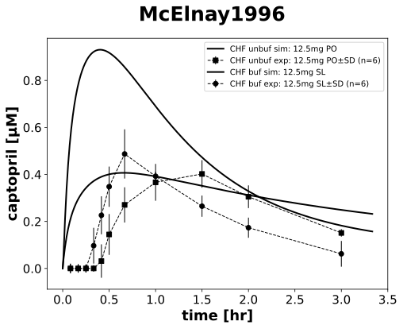

McElnay1996
Models
Datasets
- POCAP12.5_concentration_captopril_plasma_all: McElnay1996_POCAP12.5_concentration_captopril_plasma_all.tsv
- SLCAP12.5_concentration_captopril_plasma_all: McElnay1996_SLCAP12.5_concentration_captopril_plasma_all.tsv
- POCAP12.5_concentration_renin_plasma_all: McElnay1996_POCAP12.5_concentration_renin_plasma_all.tsv
- SLCAP12.5, PF25_concentration_renin_plasma_all: McElnay1996_SLCAP12.5, PF25_concentration_renin_plasma_all.tsv
- POCAP12.5_blood pressure systolic: McElnay1996_POCAP12.5_blood pressure systolic.tsv
- SLCAP12.5_blood pressure systolic: McElnay1996_SLCAP12.5_blood pressure systolic.tsv
Figures
- PK: McElnay1996_PK.svg
- PD: McElnay1996_PD.svg
{kind=link}
PK
|  |
PD

|
Code
../../../../experiments/studies/mcelnay1996.py
"""McElnay1996"""
from typing import Dict
from sbmlsim.data import DataSet, load_pkdb_dataframe
from sbmlsim.fit import FitMapping, FitData
from sbmlutils.console import console
from pkdb_models.models.captopril.experiments.base_experiment import (
CaptoprilSimulationExperiment,
)
from pkdb_models.models.captopril.experiments.metadata import Tissue, Route, Dosing, Health, Fasting, \
CaptoprilMappingMetaData, PKPDData
from sbmlsim.plot import Axis, Figure
from sbmlsim.simulation import Timecourse, TimecourseSim
from pkdb_models.models.captopril.helpers import run_experiments
class McElnay1996(CaptoprilSimulationExperiment):
"""Simulation experiment for McElnay1996.
Pharmacokinetics and pharmacodynamics study of buffered and unbuffered captopril administrated
orally in patients with congestive heart failure.
- overnight fast
- light breakfast (400 kcal.)
- NYHA classes 2-4
"""
routes = []
dose = 12.5 # mg
forms = []
ren = {
"PO": 52.74, # pg/ml
"SL": 53.39,
}
sbp = {
"PO": 121.83, # mmHg
"SL": 123.8
}
dbp = {
"PO": 77.8, # mmHg
"SL": 76.2
}
heart_rate = {
"PO": 86.7, # 1/min
"SL": 87.0
}
marker = {
"unbuf": "s",
"buf": "o",
}
colors = {"CHF": "black"}
elements_unique = ["concentration_renin", "blood pressure systolic", "captopril"]
def datasets(self) -> Dict[str, DataSet]:
dsets = {}
self.reset_state()
self.routes = []
self.forms = []
for fig_id in ["Fig1", "Fig2", "Tab3Mean"]:
df = load_pkdb_dataframe(f"{self.sid}_{fig_id}", data_path=self.data_path)
for label, df_label in df.groupby("label"):
dset = DataSet.from_df(df_label, self.ureg)
for element in self.elements_unique:
if element in label:
self.data_collection(element=element, label=label)
dset.unit_conversion(
self.data_type, self.conversion_factor
)
if "POCAP12.5" in label:
self.routes.append("PO")
self.forms.append("unbuf")
elif "SLCAP12.5" in label:
self.routes.append("SL")
self.forms.append("buf")
dsets[f"{label}"] = dset
break
# console.print(dsets.keys())
# console.print(dsets)
return dsets
def simulations(self) -> Dict[str, TimecourseSim]:
Q_ = self.Q_
tcsims = {}
for route in self.routes:
tcsims[f"cap_{route}_{self.dose}_CHF"] = TimecourseSim(
Timecourse(
start=0,
end=200, # minutes
steps=400,
changes={
**self.default_changes(),
f"{route}DOSE_cap": Q_(self.dose, "mg"),
"f_cardiac_function": Q_(
(self.cardiac_map["Mild cardiac impairment"] + self.cardiac_map["Moderate cardiac impairment"] + self.cardiac_map["Severe cardiac impairment"] + self.cardiac_map["Cardiac failure"]) / 4, "dimensionless"
),
f"ren_ref": Q_(self.ren[route], "pg/ml") / self.Mr.ren,
f"[ren]": Q_(self.ren[route], "pg/ml") / self.Mr.ren,
"HR": Q_(self.heart_rate[route], "1/min"),
f"SBP_ref": Q_(self.sbp[route], "mmHg"),
f"DBP_ref": Q_(self.dbp[route], "mmHg"),
},
)
)
return tcsims
def fit_mappings(self) -> Dict[str, FitMapping]:
mappings = {}
for kl, label in enumerate(self.clabels):
route = self.routes[kl]
yid = self.yids[kl]
form = self.forms[kl]
mappings[
f"fm_cap{route}{self.dose}_{self.element_ids[kl]}_{form}_plasma_acute_nonfasting_all_CHF"
] = FitMapping(
self,
reference=FitData(
self,
dataset=label,
xid="time",
yid="mean",
yid_sd="mean_sd",
count="count",
),
observable=FitData(
self, task=f"task_cap_{route}_{self.dose}_CHF", xid="time", yid=yid
),
metadata=CaptoprilMappingMetaData(
tissue=Tissue.PLASMA,
route=Route.SL if route == "SL" else Route.PO,
dosing=Dosing.SINGLE,
health=Health.HEART_FAILURE,
fasting=Fasting.LIGHT_BR,
data=PKPDData.PK if "cap" in self.element_ids[kl] else PKPDData.PD
),
)
# console.print(mappings)
return mappings
def figures(self) -> Dict[str, Figure]:
return {
**self.pk_figures(),
**self.pd_figures(),
}
def pk_figures(self) -> Dict[str, Figure]:
fig = Figure(
experiment=self,
sid="PK",
name=f"{self.__class__.__name__}",
height=self.panel_height,
width=self.panel_width,
)
plots = fig.create_plots(
xaxis=Axis(self.labels["time"], unit=self.units["time"]), legend=True
)
plots[0].set_yaxis(self.labels["[Cve_cap]"], unit=self.units["[Cve_cap]"])
for kl, label in enumerate(self.clabels):
if "captopril" in label:
route = self.routes[kl]
form = self.forms[kl]
# simulation
plots[0].add_data(
task=f"task_cap_{route}_{self.dose}_CHF",
xid="time",
yid=self.yids[kl],
label=f"CHF {form} sim: {self.dose}mg {route}",
color=self.colors["CHF"],
)
# dataset
plots[0].add_data(
dataset=label,
xid="time",
yid="mean",
yid_sd="mean_sd",
count="count",
label=f"CHF {form} exp: {self.dose}mg {route}",
color=self.colors["CHF"],
marker=self.marker[form],
)
return {
fig.sid: fig,
}
def pd_figures(self) -> Dict[str, Figure]:
fig = Figure(
experiment=self,
sid="PD",
name=f"{self.__class__.__name__}",
num_rows=1,
num_cols=2,
height=self.panel_height,
width=self.panel_width * 2,
)
plots = fig.create_plots(
xaxis=Axis(self.labels["time"], unit=self.units["time"]), legend=True
)
for kyu, yid_unique in enumerate(["[ren]", "SBP"]):
plots[kyu].set_yaxis(self.labels[yid_unique], unit=self.units[yid_unique])
for kl, label in enumerate(self.clabels):
if yid_unique == self.yids[kl]:
route = self.routes[kl]
form = self.forms[kl]
# simulation
plots[kyu].add_data(
task=f"task_cap_{route}_{self.dose}_CHF",
xid="time",
yid=yid_unique,
label=f"CHF {form} sim: {route} {self.dose} mg",
color=self.colors["CHF"],
)
# dataset
plots[kyu].add_data(
dataset=label,
xid="time",
yid="mean",
yid_sd="mean_sd",
count="count",
label=f"CHF {form} exp: {route} {self.dose} mg",
color=self.colors["CHF"],
marker=self.marker[form],
)
return {
fig.sid: fig,
}
if __name__ == "__main__":
run_experiments(McElnay1996, output_dir=McElnay1996.__name__)